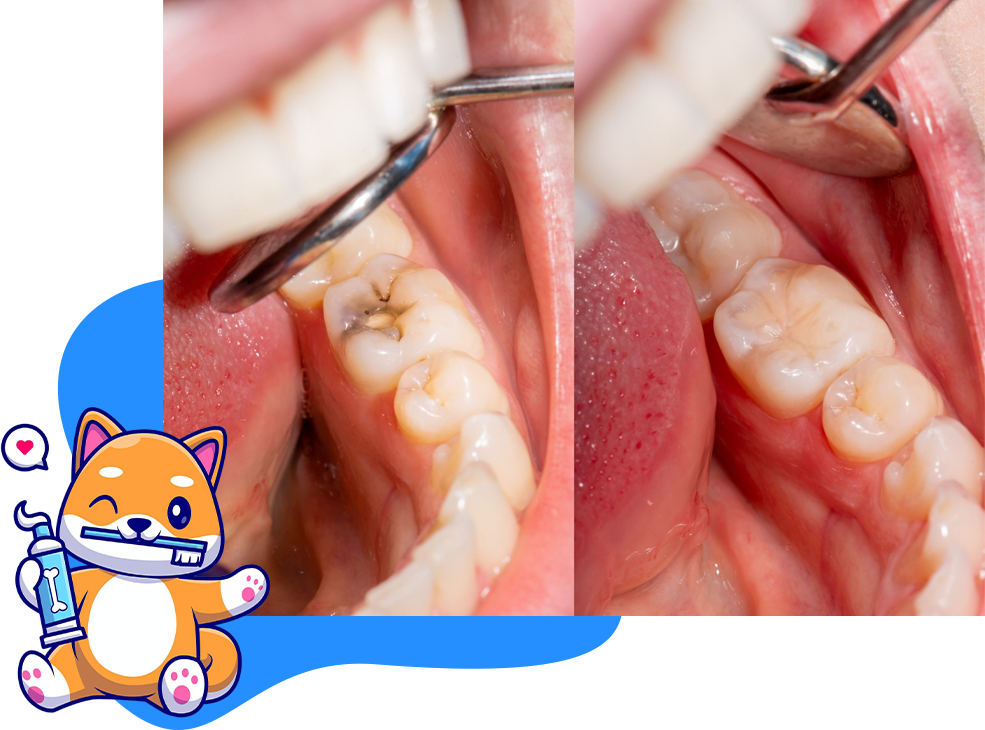
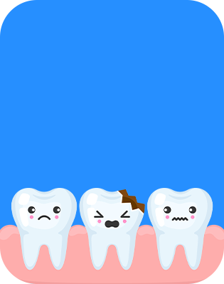
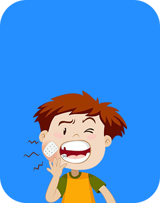
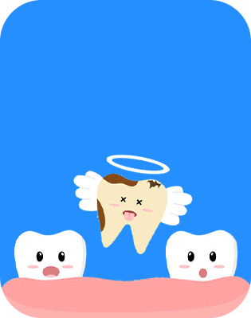
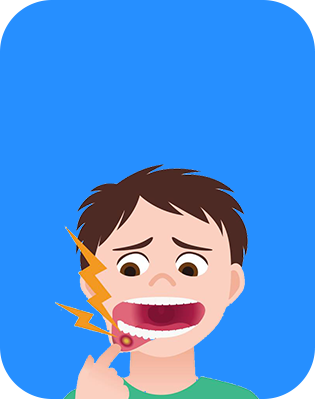
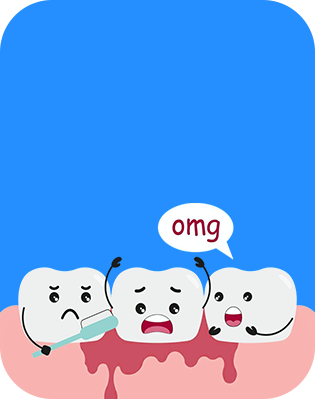

Dental Decay Management
Cavity Treatment & Tooth-Colored Fillings
Cavities, also called dental caries, are very common in children due to sugary diets and improper brushing. At Kiddoz Dental World, we offer painless cavity treatment using advanced techniques.
Once the decayed part of the tooth is removed, it is restored by using the fillings that match the natural tooth color and keep your child’s smile beautiful while restoring its strength and function. Our focus is on maximum comfort, minimum discomfort, and long-lasting results.

Pediatric Root Canal Treatment
Sometimes, a tooth is so badly decayed or infected that a simple filling isn’t enough. In such cases, a pediatric root canal (Pulpectomy/Pulpotomy) is required. At Kiddoz Dental World, root canals are performed using child friendly techniques, modern equipment, and local anesthesia to ensure complete comfort. Saving baby teeth is important as they guide the proper eruption of permanent teeth.
Emergency Dental Care for Kids
Dental injuries are common in children during play and sports. We treat all types of dental emergencies including:
-

Broken teeth
-

Toothache and swelling
-

Knocked-out teeth
-

Trauma to lips and gums
-

Bleeding from mouth
Immediate treatment can often save the tooth and prevent complications. Parents are advised to contact the clinic immediately in such cases.